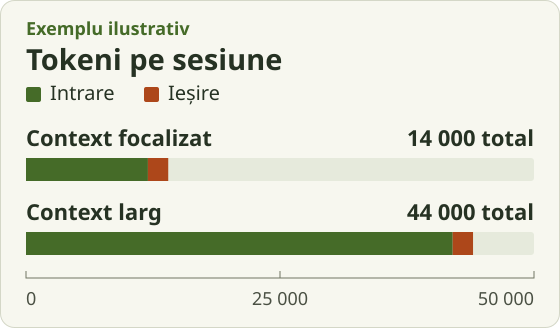
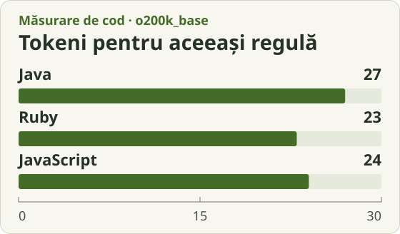

Ce consumă tokeni când lucrezi cu un agent AI
Tokenii de intrare includ cerința, istoricul și fragmentele de cod sau de loguri pe care agentul le trimite modelului. Tokenii de ieșire includ răspunsurile și, la modelele care îi raportează astfel, tokenii de raționament. O modificare poate trece prin mai multe apeluri, iar o parte din intrare poate fi refolosită din cache și tarifată diferit. Aici urmărim consumul din timpul dezvoltării. Dacă aplicația oferă și o funcție AI clienților, apelurile acelei funcții au propriul consum. Cum sunt numărați tokenii · Documentația despre cache
Imaginează-ți că testul pentru expirarea unei invitații pică. Un agent primește funcția și testul relevant. În altă sesiune, primește și fișiere din alte module, plus loguri complete. În graficul de mai jos, am presupus aceeași ieșire în ambele sesiuni ca să izolăm efectul intrării.

Dacă ai un buget fix, urmărește ce citește agentul între încercări și cât de precis îi arată testele unde a greșit. Un test care indică exact cazul de expirare poate scurta căutarea prin proiect.
O regulă în Java, Ruby și JavaScript
Un coleg poate accepta o invitație dacă aceasta e nefolosită și încă nu a expirat. La momentul exact al expirării, răspunsul este fals. Cele trei fragmente primesc aceleași date, un indicator boolean și două momente exprimate în milisecunde, în intervalul de întregi reprezentabil exact în JavaScript.
Java
static boolean canAcceptInvite(long expiresAt, long now, boolean used) {
return !used && now < expiresAt;
}Ruby
def can_accept_invite(expires_at, now, used)
!used && now < expires_at
endJavaScript
function canAcceptInvite(expiresAt, now, used) {
return !used && now < expiresAt;
}
len(tiktoken.get_encoding("o200k_base").encode(fragment)). Tokenizerul tiktokenPatru tokeni separă Java de Ruby în aceste fragmente. Graficul măsoară textul afișat, inclusiv numele, tipurile și formatarea. Pentru o funcționalitate întreagă, măsurarea trebuie să includă și codul citit, testele și încercările de corectare.
Trei stack-uri pentru aceeași aplicație
React este o bibliotecă pentru interfețe. Ca să comparăm aplicații complete, folosim Java cu Spring Boot și Thymeleaf, Ruby cu Rails și Hotwire, respectiv JavaScript cu React și Next.js. În toate trei, utilizatorul invită un coleg, invitația expiră și poate fi folosită o singură dată, inclusiv dacă sosesc două cereri de acceptare în același timp. Spring MVC cu Thymeleaf · Ghidul Rails · Cadre de lucru pentru React
Convențiile pentru rute, modele, migrații și formulare îi dau agentului repere previzibile. Dacă portalul urmează structura Rails, un formular și o validare pot fi schimbate cu puțin context propriu proiectului. Testele îi arată agentului reguli care altfel pot rămâne implicite, cum ar fi cine are voie să invite pe cine.
Într-un proiect cu controller, serviciu și repository separate, agentul poate avea mai multe fișiere de parcurs. Tipurile și compilatorul oferă însă feedback imediat despre contractele din cod, iar Spring Data JPA poate genera implementarea unor metode de acces la date. O regulă de acces concentrată într-un singur serviciu poate fi ușor de găsit, modificat și testat. Ghidul Spring Data JPA
Agentul poate lucra la formular și la logica de pe server în același proiect. Când adaugi stări interactive, trebuie să înțeleagă și ce rulează în browser, unde se validează datele și ce se întâmplă după trimitere. Dacă portalul folosește deja o convenție pentru aceste lucruri, agentul o poate urma la fiecare schimbare. Componente de server și client în Next.js
Ce aș alege pentru un startup
Aș începe cu Rails pentru un MVP de business când echipa pornește de la zero și produsul înseamnă în principal conturi, formulare, permisiuni și operații uzuale pe date. Convențiile îți permit să testezi primul flux cu clienții înainte de a lua multe decizii de arhitectură.
Aș alege React cu Next.js când interfața e o parte esențială din produs, de exemplu un editor vizual, sau când echipa are deja experiență în ecosistemul JavaScript și poate verifica rapid ce generează agentul. TypeScript merită luat în calcul dacă echipa vrea verificări statice pentru contractele dintre componente și server.
Aș alege Spring Boot când echipa lucrează deja bine în Java, are integrări în acel ecosistem sau când regulile de business au nevoie de contracte explicite între module. Dacă verifici și corectezi rapid o propunere a agentului, experiența echipei poate cântări mai mult decât diferența de tokeni dintre două fragmente.
Cum măsori pe proiectul tău
Ia câte o cerință reprezentativă, cum ar fi un formular nou, o schimbare de permisiuni sau o interacțiune importantă în browser. Începe din proiecte cu funcționalitate și maturitate comparabile. Folosește același agent, model, buget de încercări și aceleași criterii de acceptare. Repetă fiecare probă în sesiuni noi și păstrează separat costul de inițializare a proiectului.
Pentru fiecare stack, împarte totalul tokenilor din toate încercările la numărul de soluții care trec testele. Notează și rata de succes, timpul până la o soluție validă și factura estimată pe baza tokenilor de intrare fără cache, a celor de intrare serviți din cache și a celor de ieșire, conform tarifării furnizorului. Dacă nicio încercare nu trece, raportează consumul și rata de succes de 0%.
La primul MVP contează și cât de repede poate echipa să schimbe ceva după ce vorbește cu un client. Proba cu invitațiile merită rulată tocmai pentru că trece prin interfață, date, permisiuni și teste, așa cum o vor face și multe dintre schimbările din produs.